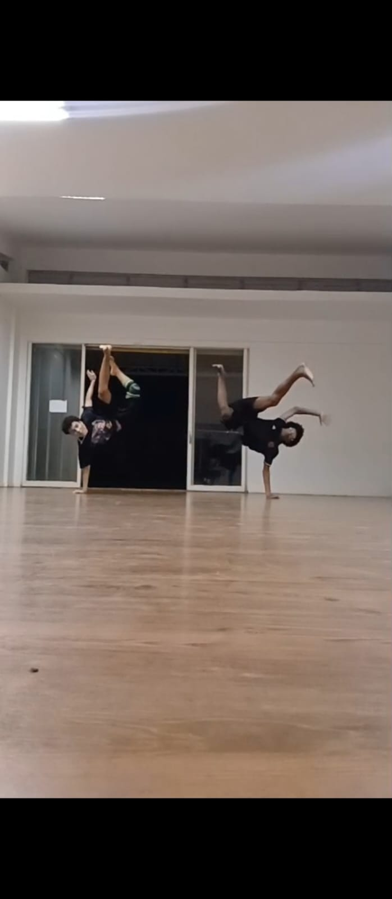
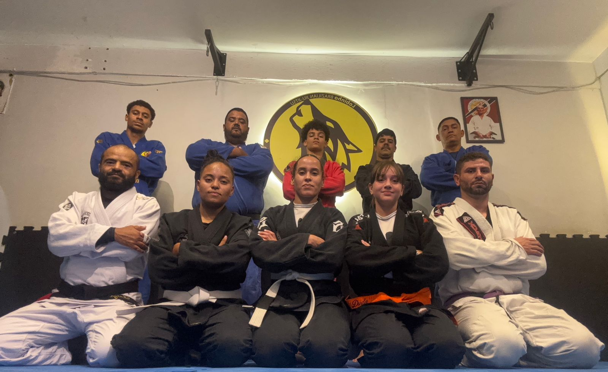

Um pouco sobre mim
Me chamo Nicholas Ury, tenho 16 anos e sou estudante do ensino médio no Centro de Ensino Médio 12 de Ceilândia. Tenhos dois cachorros, um macho da raça Yorkshire chamado Bethoven e uma fêmea da raça vira-lata chamada lilica. Desde pequeno possuo uma certa "paixão" por tecnologia, jogos e coisas de mundinho nerd como muitas pessoas dizem, porém depois dos 11 anos de idade comecei a usar os jogos para distrair a cabeça de problemas pessoais. Meu genêro favorito de games é o de ação ou luta, pois me lembra minha infância e me traz certa nostalgia. Gosto muito de ouvir música também, meus artistas favoritos são Matuê, Major RD e Baco Exu do Blues. Meu genêro músical é bem variado, ouço de tudo, desde MPB até Rock, mas o meu favoito é o trapp por conta dos meus artistas favoritos. Sobre meu futuro, desejo trabalhar na área de T.I como desenvolvedor de software ou algo assim, pretendo fazer faculdade sobre esse assunto na UnB.
Atividades Extracurriculares
Sobre minhas atividades extracurriculares, participo de um curso de programação de que fica na comercial norte, nesse curso apreendo sobre varis linguagens de programação, aprendo também sobre cibersegurança um ponto muito importante nos dias de hoje. Além desse curso eu luto jiu-jitsu e capoeira na instituição Fio Da Navalha que fica situada na Samambaia Sul, pratico artes marciais desde os 10 anos de idade porem dei uma pausa entre os 12 e os 16 por conta de problemas pessoais. Também participo do grupo Si Bobiá A Gente Pimba que também fica na Samambaia sul. Esse grupo é voltado para a cultura brasileira de quadrilhas juninas e passos poppulares como frevo, maculelê, xaxado entre outros.
Minhas Atividades em Fotos


